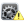

首页
帮助
退出
欢迎您，【输电运维一班】ztjcys
机器人管理
任务管理
全面巡检
全面巡检
例行巡检
例行巡检
专项巡检
红外测温
油位、油温表抄录
避雷器表记读取
SF压力抄录
液压表抄录
位置状态识别
特殊巡检
恶劣天气特巡
缺陷跟踪
远方异常告警确认
远方状态确认
安防联动
协助应急事故处理
自定义任务
自定义任务
地图选点
地图选点
任务展示
任务展示
实时监控
巡检监控
巡检监控
机器人遥控
机器人遥控

巡检结果确认
设备告警信息确认
设备告警查询确认
主接线展示
间隔展示
巡检结果浏览
巡检结果浏览
巡检报告生成
巡检报告生成
巡检结果分析
对比分析
对比分析
生成报表
生成报表
用户设置
告警设置
告警阈值设置
告警信息订阅设置
组织权限设置
权限管理
点位设置
典型巡检点位库维护
巡检点位设置
检修区域设置
检修区域设置
机器人系统调试维护
巡检地图设置
巡检地图维护
软件设置
软件设置
机器人设置
机器人设置
机器人告警查询
机器人告警查询
识别异常点位查询
机器人管理
>
机器人管理
 实时监控
实时监控